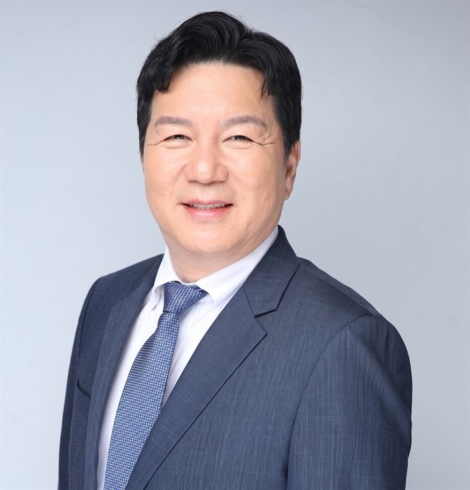

지속 가능한 미래를 설계하는
물 인프라 전문 기업인 연합회
VISION & MISSION
비전 및 미션
미래를 향한 우리의 핵심 가치

Innovation
첨단 수처리 기술과 스마트 물관리 솔루션 도입으로 물 인프라 산업의 혁신을 주도합니다.
Collaboration
물 산업 분야의 산학연 협력을 강화하여 시너지와 공동 발전을 도모합니다.
Sustainability
소중한 물자원을 보호하고 사회적 책임을 다하는 지속 가능한 물 인프라 생태계를 조성합니다.

인사말
대한민국 물 산업 현장을 이끌어가는 기업인 및 전문가 여러분, AWC기업인연합회를 찾아주셔서 진심으로 환영합니다. 우리 연합회는 단순한 친목 모임을 넘어, 상하수도·수처리·수자원 관리 등 물 인프라 회원사 간의 실질적인 협력과 정보 교류를 바탕으로 급변하는 경영 환경 속에서도 흔들리지 않는 성장의 기반을 함께 만들어가고자 설립되었습니다.
우리는 정기적인 세미나와 포럼을 통해 최신 물 산업 동향과 정책 변화를 신속하게 공유하고, 회원사 간의 실질적인 사업 협력과 네트워킹을 지원합니다. 또한 현장의 목소리를 모아 정책 제안 활동을 펼치며, 회원 여러분의 의견이 실제 제도 개선으로 이어질 수 있도록 최선을 다하고 있습니다.
투명하고 신뢰할 수 있는 조직 운영을 원칙으로, 회원사 한 곳 한 곳의 성장이 곧 연합회 전체의 발전이라는 믿음으로 나아가겠습니다. 맑고 안전한 물이 흐르는 지속 가능한 미래를 위해, 앞으로도 변함없는 관심과 참여를 부탁드리며 함께 더 나은 내일을 만들어가겠습니다.
회장 조철